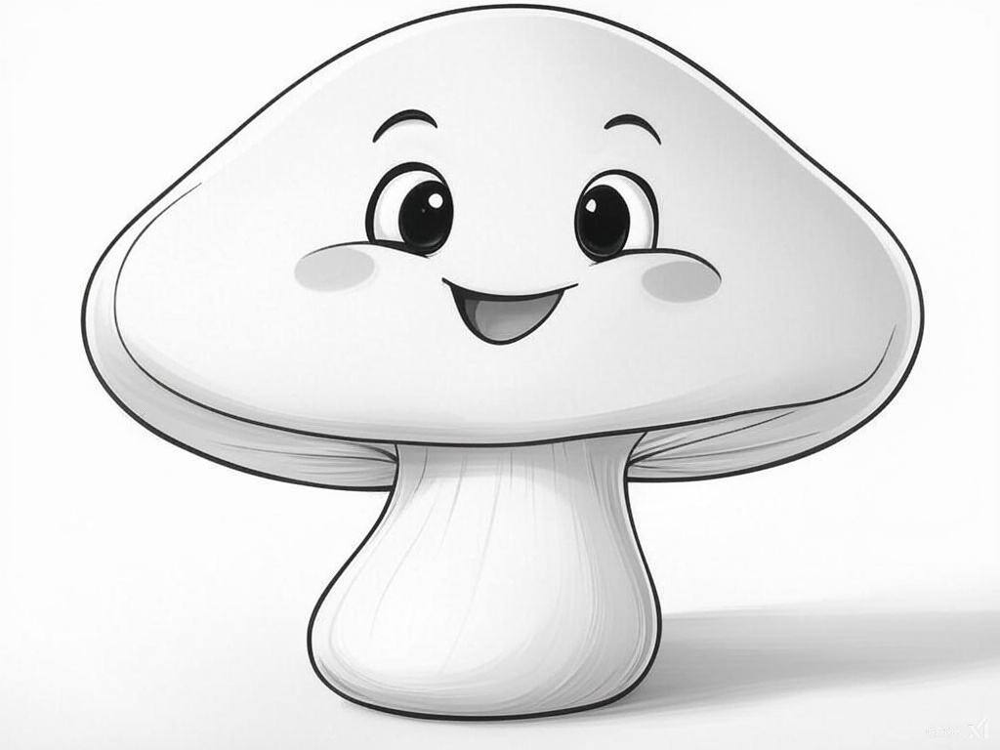

¿Se pueden comer?
- Champiñón
- Níscalo
- Boletus edulis
Setas comestibles
- Amanita muscaria
- Amanita phalloides
- Galerina marginata
Tu rincón para aprendar sobre setas, recolección y rutas increíbles
¡Bienvenidos a nuestro mundo de setas! Aquí exploraremos la magia de estos increíbles hongos, pero también queremos recordaros algo muy importante: la recolección responsable. Coger setas de la naturaleza es una aventura divertida, ¡pero debemos hacerlo con cuidado! Esto significa tomar solo lo que necesitamos, dejar algunas setas para que sigan creciendo y respetar el bosque, que es su hogar. Así, todos —las setas, los animales y nosotros— podemos seguir disfrutando de este tesoro natural. ¿Listos para aprender más?